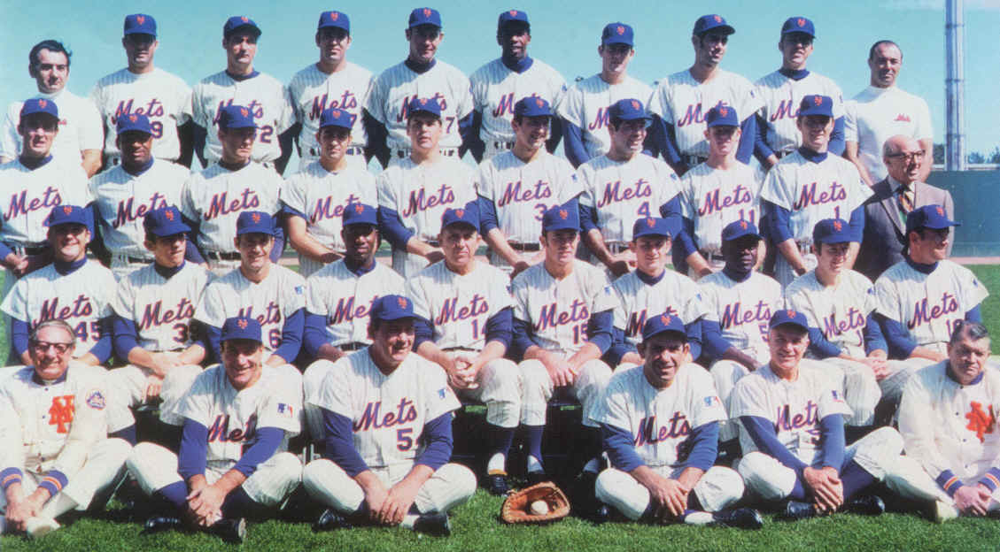
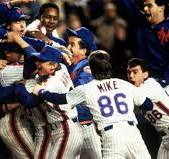

History
The Mets were established in 1962 and are based in New York City in the borough of Queens. They are part of the National League East division.
They originally played at the Polo Grounds in Manhattan then moved to Shea Stadium, but in 2009 Shea Stadium was taken down and the Mets built Citi Field next to it.
In the 60's the Mets were one of the worst teams in the league but in 1969 they had the "Miracle Mets" which won one of the world series.
They were originally names the Titans but were later sold and changed to the Jets.
The have won 1 Super Bowl and 4 division championships
Awards
The Mets have won 2 World Series. The first as said above, the "Miracle Mets" in 1969, and 1986. They have also won 5 National League Pennants, the last 2015, and 6 NL East division titles
In the 1969 season, the Orioles were heavily favored but the Mets ended up winning making it considered one of the biggest upsets in World Series History, even though the Mets won 100+ games.
The pennant years they won were 1969, 1973, 1986, 2000, 2015

Current
Currently the Mets are in an odd spot as they have a new owner, Steve Cohen, who spent a lot on star players the previous season which didn't
work out so the Mets are in a sort of mini rebuild. Many young stars and prospects are developing and some of the older stars are about to be in their contract year.